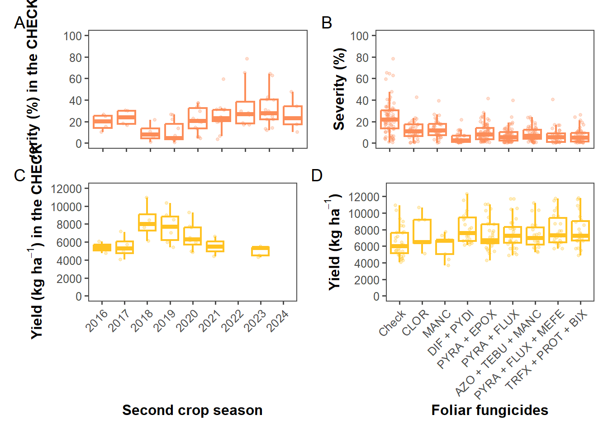

library(gsheet)
library(tidyverse)
library(ggthemes)Packages
Import the data
dat1 = gsheet2tbl("https://docs.google.com/spreadsheets/d/1joo0WaR7yNWZavGPbwQMjiFPpWHErtGL/edit?gid=1485993259#gid=1485993259")Organizing the data
datbox <- dat1 %>%
group_by(municipio, ensaio_1, produto,ano,estado) %>%
mutate(
produto = case_when(
produto == "AACHECK" ~ "Check",
produto == "TRIDIUM" ~ "AZO + TEBU + MANC",
produto == "PREVINIL" ~ "CLOR",
produto == "trat_A20259" ~ "DIF + PYDI",
produto == "ABACUS HC (Controle Positivo)" ~ "PYRA + EPOX",
produto == "OSKESTRA SC" ~ "PYRA + FLUX",
produto == "BELYAN (Controle Positivo)" ~ "PYRA + FLUX + MEFE",
produto == "FOX XPRO" ~ "TRFX + PROT + BIX",
produto == "UNIZEB GOLD (Controle Positivo, multissítio)" ~ "MANC",
TRUE ~ produto # Caso o nome do produto não coincida com nenhum dos anteriores, ele permanece igual
),
produto = factor(produto, levels = c(
"Check", "CLOR", "MANC", "DIF + PYDI", "PYRA + EPOX",
"PYRA + FLUX", "AZO + TEBU + MANC", "PYRA + FLUX + MEFE",
"TRFX + PROT + BIX"
))
)%>%
summarise(mean_sev = mean(mean_sev),
mean_prod = mean(mean_prod))
unique(dat1$produto)[1] "AACHECK"
[2] "ABACUS HC (Controle Positivo)"
[3] "BELYAN (Controle Positivo)"
[4] "FOX XPRO"
[5] "OSKESTRA SC"
[6] "TRIDIUM"
[7] "trat_A20259"
[8] "PREVINIL"
[9] "UNIZEB GOLD (Controle Positivo, multissítio)"Boxplot
Fungicide x severity
p2 = ggplot(datbox, aes(x = produto, y = mean_sev)) +
geom_boxplot(outlier.shape = NA, fill = "white", color = "#fc8d59", size = 0.8) +
geom_jitter(width = 0.2, alpha = 0.3, size = 1, show.legend = FALSE, color = "#fc8d59")+
theme_few()+
labs(x = "", y = "Severity (%)") +
theme(
axis.text.x = element_text(angle = 45, hjust = 1),
axis.title = element_text(face = "bold"))+
scale_y_continuous(limits = c(0, 100), breaks = seq(0, 100, by = 20))+
theme(
axis.text.x = element_blank(), # Esconde os rótulos do eixo x
axis.title.x = element_blank(), # Esconde o título do eixo x
axis.title = element_text(face = "bold")
) Fungicide x Yield
p4 = ggplot(datbox, aes(x = produto, y = mean_prod)) +
geom_boxplot(outlier.shape = NA, fill = "white", color = "#FFC222", size = 0.8) +
geom_jitter(width = 0.2, alpha = 0.3, size = 1, show.legend = FALSE, color = "#FFC222")+
theme_few()+
labs(x = expression(bold("Foliar fungicides")), y = expression(bold("Yield (kg ha"^-1*")")))+
theme(
axis.text.x = element_text(angle = 45, hjust = 1),
axis.title = element_text(face = "bold") )+
scale_y_continuous(limits = c(0, 13000), breaks = seq(0, 13000, by = 2000))Check
Year x Severity
datbox2 = datbox %>% filter(produto == "Check")
p1 = ggplot(datbox2, aes(x = as.factor(ano), y = mean_sev)) +
geom_boxplot(outlier.shape = NA, fill = "white", color = "#fc8d59", size = 0.8) +
geom_jitter(width = 0.2, alpha = 0.3, size = 1, show.legend = FALSE, color = '#fc8d59')+
theme_few()+
labs(x = "", y = "Severity (%) in the CHECK") +
theme(
axis.text.x = element_text(angle = 45, hjust = 1),
axis.title = element_text(face = "bold")
)+
theme(
axis.text.x = element_blank(), # Esconde os rótulos do eixo x
axis.title.x = element_blank(), # Esconde o título do eixo x
axis.title = element_text(face = "bold")
) +
scale_y_continuous(limits = c(0, 100), breaks = seq(0, 100, by = 20))
datbox2 |>
group_by(ano) |>
summarise(
media = mean(mean_sev, na.rm = TRUE),
mediana = median(mean_sev, na.rm = TRUE),
media_prod = mean(mean_prod, na.rm = TRUE),
mediana_prod = median(mean_prod, na.rm = TRUE))# A tibble: 9 × 5
ano media mediana media_prod mediana_prod
<dbl> <dbl> <dbl> <dbl> <dbl>
1 2016 19.3 20.2 5387. 5387.
2 2017 23.8 24 5464. 5325.
3 2018 9.74 8.1 8290. 8042.
4 2019 10.4 4.85 7689. 7732.
5 2020 21.2 20.6 6621. 6309.
6 2021 24.8 23.1 5513. 5513.
7 2022 34.9 27.1 NaN NA
8 2023 31.7 28.0 5008. 5360.
9 2024 26.5 23.2 NaN NA Year x Yield
p3 = ggplot(datbox2, aes(x = as.factor(ano), y = mean_prod)) +
geom_boxplot(outlier.shape = NA, fill = "white", color = "#FFC222", size = 0.8) +
geom_jitter(width = 0.2, alpha = 0.3, size = 1, show.legend = FALSE, color = "#FFC222")+
theme_few()+
labs(x = expression(bold("Second crop season")),
y = expression(bold("Yield (kg ha"^-1*") in the CHECK"))) +
theme(
axis.text.x = element_text(angle = 45, hjust = 1),
axis.title = element_text(face = "bold"))+
scale_y_continuous(limits = c(0, 12000), breaks = seq(0, 12000, by = 2000))Combining the plots
library(patchwork)
(p1|p2)/
(p3|p4) + plot_annotation(tag_levels = "A")
#ggsave("box_plot_MWS.png", width = 8, height = 8, bg = "white", dpi = 1000)